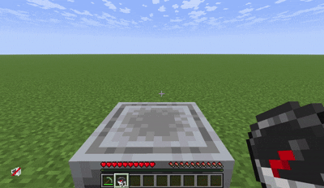
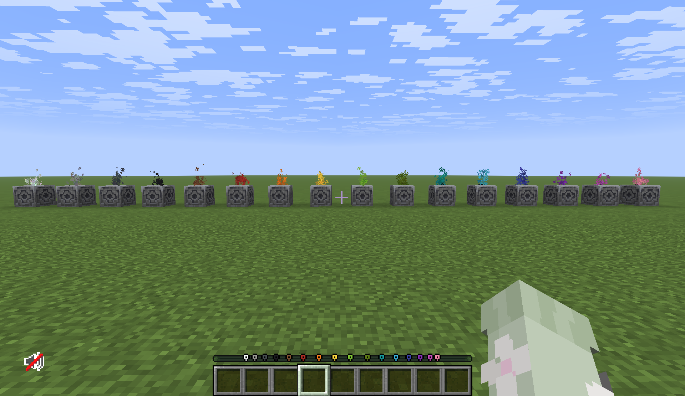

Highlights
- Extended the game's waypoint system to allow tracking of block locations through the UI in a way that ties several unrelated mechanics together.
- Ported color combinaton logic from Java to the McFunction language.
- Created simple 2D assets that are easy to parse in the UI.
- Developed a flexible system that allows players to customize the sprite and color of a waypoint.



Roles: Engineer, Designer
This project was an exercise in extending a feature added by other developers: I followed the development cycle of this feature closely and wanted to try using their interfaces to improve the feature in a way that the developers likely didn't consider. This involved exposing systems that aren't available to datapack creators by porting to the McFunction language.
My datapack allows players to change the icon of a locational marker by throwing an item on top of the marker. I didn't want to store extra information inside of a marker by keeping track of exactly which items had been thrown on top of a marker (this could likely be abused to overflow an entity's information and crash the game), so I had to decide what constituted a reasonable price for a purely aesthetic change. This was easy for most markers: a single piece of food creates a food icon, a single tree creates a tree icon. I ended up restricting the pickaxe marker to the cheapest types of pickaxes so that players wouldn't lose a valuable item.